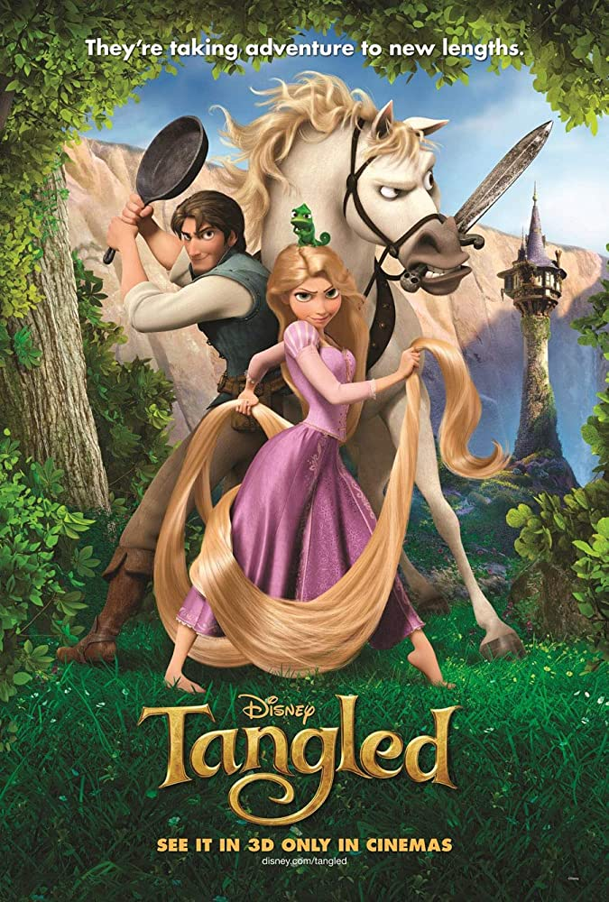
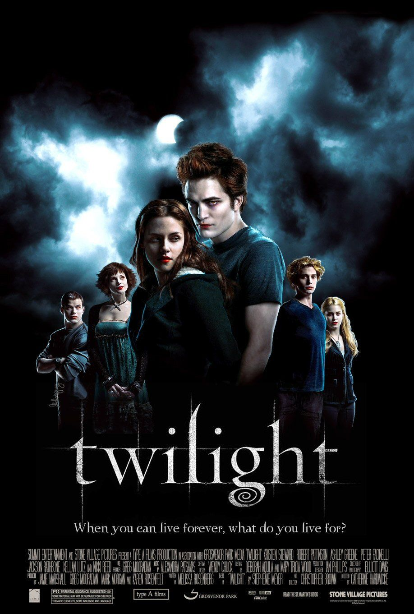

Tangled
Tangled is a 2010 American 3D computer-animated musical adventure fantasy comedy film[2] produced by Walt Disney Animation Studios and released by Walt Disney Pictures. Loosely based on the German fairy tale Rapunzel in the collection of folk tales published by the Brothers Grimm, it is the 50th Disney animated feature film. The film was directed by Nathan Greno and Byron Howard (in the former's feature directorial debut) and produced by Roy Conli, from a screenplay written by Dan Fogelman. Featuring the voices of Mandy Moore, Zachary Levi, and Donna Murphy,[7] Tangled tells the story of Rapunzel, a lost young princess with magical long blonde hair who yearns to leave her secluded tower. She accepts the aid of an intruder to take her out into the world which she has never seen.

Twilight
Twilight is a 2008 American romantic fantasy film directed by Catherine Hardwicke from a screenplay by Melissa Rosenberg, based on the 2005 novel of the same name by Stephenie Meyer. It is the first instalment in The Twilight Saga film series. The film stars Kristen Stewart and Robert Pattinson as Bella Swan, a teenage girl, and Edward Cullen, a vampire, respectively, and focuses on the development of Bella and Edward's relationship and the subsequent efforts of Edward and his family to keep Bella safe from another coven of vampires.
